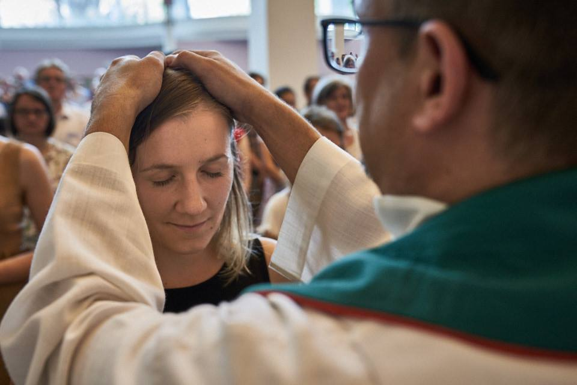
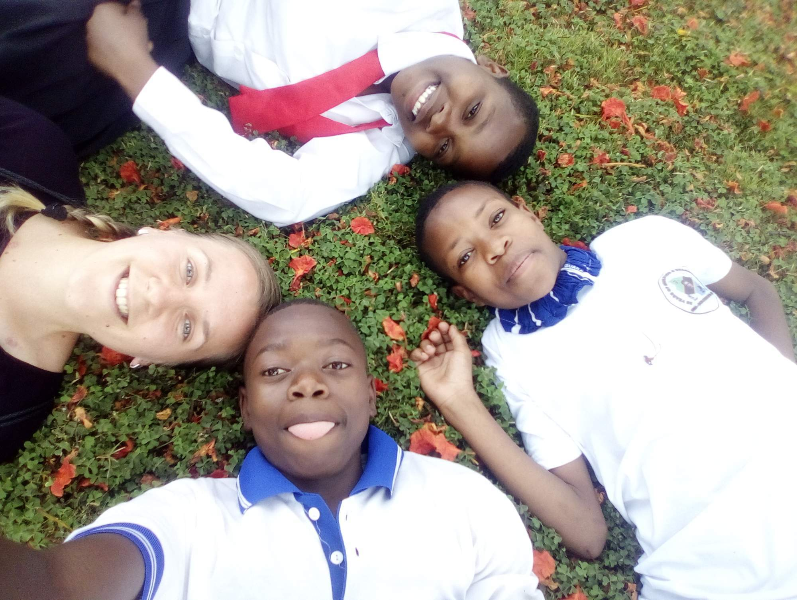
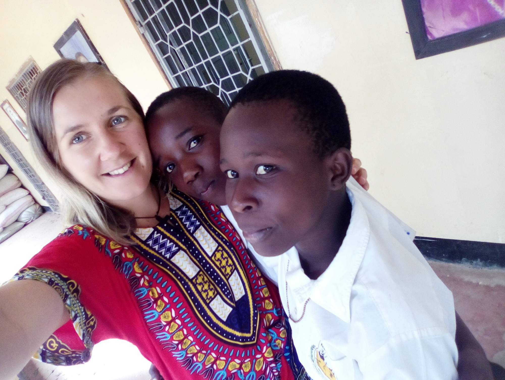
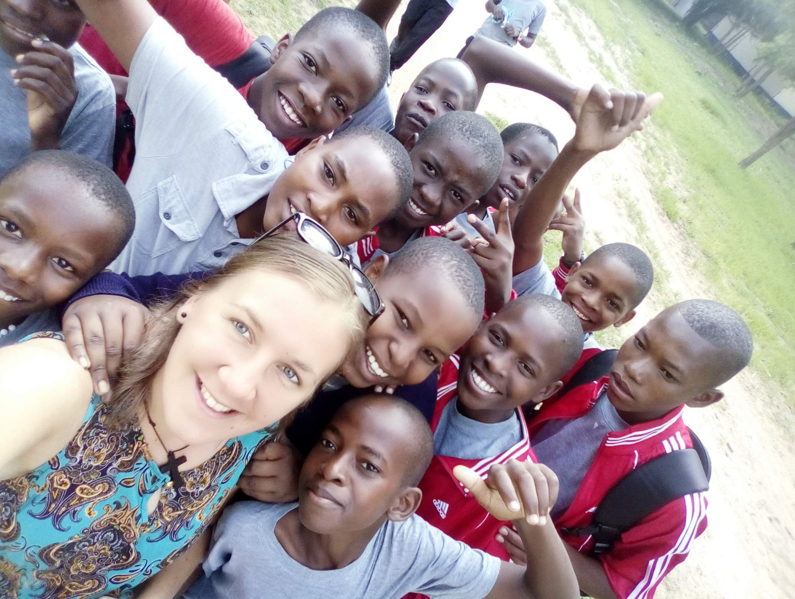
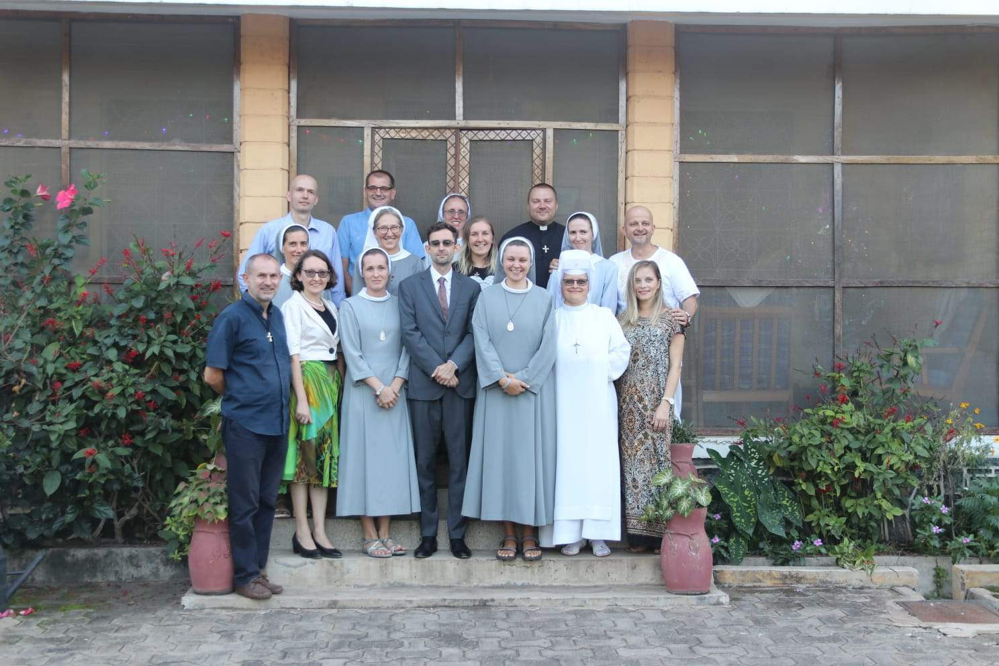

Mohla by ses nám představit?
Jmenuji se Renata Szpyrcová, pocházím z Jablunkova. Vystudovala jsem polštinu a před odjezdem do Tanzanie jsem pracovala v advokátní kanceláří jako asistentka.
Co Tě vedlo k rozhodnutí stát se dobrovolnicí projektu Adopce nablízko?
Stát se dobrovolníkem a odjet na misie do zahraničí byl můj dětský sen, touha dělat něco pro druhé. Když jsem začala pracovat, touha po dobrovolnictví se začala probouzet a já začala hledat možnosti jak si tento sen splnit. Už kdysi jsem byla dobrovolníkem v salesiánském středisku v Ostravě, takže projekt Adopce nablízko se mi tak nějak sám připletl pod nohy.
V čem spočívá Tvoje služba v Tanzanii?
Mohu se nazvat „průkopník“ – jsem první dobrovolník z České republiky v Tanzanií, takže to tady sonduji a dávám zpětnou vazbu našim „salošům“ a budoucím dobrovolníkům.
Stát se dobrovolníkem a odjet na misie do zahraničí byl můj dětský sen, touha dělat něco pro druhé.
Jsem dobrovolník v Don Bosco Secondary School Didia. Obecně to je práce s mládeží (1200 studentů), administrativní práce a to co je třeba zrovna udělat a zařídit.
V čem spočívá moje služba? Uvedu slova o. Miroslava: „sdílet s nimi život a být nástrojem“.
Proč ses rozhodla pro Afriku? Měla jsi možnost výběru místa, kde budeš sloužit?
Salesiáni přihlíží na preference dobrovolníka, ale také na jazykovou vybavenost a talenty. Doprovázejí ho ke správnému výběru. Když už padne kontinent, pak se řeší konkrétní země a místo. První kontakt s přijímacím střediskem komunikují otcové a pak už i dobrovolník.
Život je příliš krátký na to, abychom stáli na místě. Máš nějaký tajný sen? Napiš si ho tučně na kus papíru, nečekej a zrealizuj ho!
Za mě to byla vždy Afrika, ale přemýšlela jsem i o Indii (to pálivé jídlo mě tam lákalo). Konkrétní zemi jsem neměla, ale když mi nabídli Tanzanií, tak jsem neváhala.

Jak vypadala Tvoje příprava na tuto službu?
Příprava dobrovolníka v projektu Adopce nablízko trvá osm víkendů (v různých salesiánských střediscích po celé ČR) v průběhu téměř celého roku (od října do června). Dobrovolník se musí zúčastnit nejméně šesti víkendů, musí absolvovat dvoutýdenní praxi v jeho preferovaném/vybraném salesiánském středisku v ČR a musí udělat jazykové zkoušky. Přípravné víkendy jsou plné seminářů, her, přednášek hostů, společného sdílení, modliteb a exotického jídla. Byl to parádní zážitek! Až teď v průběhu mé služby si uvědomuji, jak důležitá je tato příprava. Všechny rady otců, postřehy bývalých dobrovolníků a aktivity jsou opravdu užitečné a nezbytné. Občas mi zasvítí kontrolka a vybavím si přesně to, co nám radili a na co nás upozorňovali.
Mohla bys nám popsat, jak vypadaly první dny? Nastal pro Tebe po příjezdu kulturní šok? Co Tě nejvíce překvapilo?
Chaos, hlasitá muzika, nové vůně, vedro. Tlačící se lidé okolo, hlasitý smích dětí. Spousta otázek a pozdravů. Svahilština a sukuma jazyk. Vesničky, domy z bláta a slámy. Děti sedící na okraji silnice.
Kulturní šok prožívá každý individuálně. Na začátku bylo všechno nové, zvláštní. Měla jsem smíšené pocity – radost se mísila s nejistotou. V hlavě jsem měla hodně nezodpovězených otázek. Byla jsem takový tichý pozorovatel, prozkoumávala jsem terén. Snad každý den mě tady něco překvapuje. Člověk se každý den učí a snaží pochopit jejich kulturu. Tak jak mě hodně věcí šokuje, tak hodně věcí určitě šokuje i je. Je to hlavně o komunikaci a o rozhovorech. Když mi něco připadá zvláštní, tak se to snažím vykomunikovat a to mi pomáhá to zařadit k těm kulturním rozdílům.
Stanovit si cíl, to je ten největší motor pro realizací konkrétního díla.
Vřelé uvítání celé školy mě hned vtáhlo do centra děje, do toho „rušna“ okolo. Otcové mi dali čas ať si odpočinu, ať se rozkoukám a ať si vyberu nějaké aktivity, které mě baví a co bych chtěla dělat.
Mile mě překvapilo jak celá škola funguje, jaký má řád a jak studenti spolupracují.
Jak vypadá Tvůj běžný den? Čemu se věnuješ?
Každý den začíná ranní modlitbou v 5.45 hodin ráno. Následuje mše svatá, snídaně a assembly (anglicky shromáždění), tedy ohlášky a nové informace pro studenty, zpěv hymny a nástup skautů,... V osm začíná výuka. Polední přestávka na oběd a opět výuka až do čtyř odpoledne. Já jsem si našla místečko/práci v knihovně. Původně jsem pomáhala paní knihovnicí s chodem celé knihovny (umíte si představit jednu knihovnici na 1200 dětí...?) a teď už naplno pracujeme s knihovním systémem. Ten se nám podařilo spolu s dalšími dobrovolníky opětovně rozjet. Lepím čárové kódy na každou knihu a pak ji zapisuji do systému. Je to běh na dlouhou trať, ale věřím, že to je užitečná práce, která usnadní řádné fungování knihovny. Po vyučování máme sportovní hry. Basket, volejbal, fotbal, judo, taneční kroužek, stolní tenis, badminton. Já jsem si vzala na starost atletiku – a ke zdejším podmínkám a možnostem chodíme nejčastěji běhat. Po hrách sprcha, růženec a slůvko na večer. Pak zase vyučování, pauza na večeři. Konečně konec vyučování ve 22:00 a hurá do postele (timetable pro studenty). Já mívám večerní výuku angličtiny, ale jenom procvičování výslovnosti a čtení s Preform students (naši nováčci). Spolu se salesiány máme v sedm večerní modlitby a následně společnou večeři.

Co se dalších povinností týče, tak to jsou takové nárazovky, nějaké to face to face doučování angličtiny, pomoc při zkouškách, pomoc s realizaci projektů a přípravy oslav. Člověk se tady opravdu nenudí.
Tématem letošního Absolventského Velehradu je „Co je cíl?“. Co je pro Tebe momentálně cílem? Změnila Tvá služba vnímání Tvého životního cíle?
Mým aktuálním krátkodobým cílem je dát knihovně život, rozjet systém a usnadnit práci paní knihovnici. Dále chci pomoct studentům. Možná jen mou přítomností, ale i sdílením. Rozšířit jim obzory a předat jim možná trochu odlišný pohled na Evropu a jiné západní země.
Určitě mě tato služba motivuje si stanovit další, nové cíle. Vykročení z vlastní komfortní zóny, čelení nejrůznějším problémům a výzvám, prošlapávání si nové cestičky a osamostatnění, kterým si projde snad každý dobrovolník, vedou k sebepoznání a taky dokazují, že stanovit si cíl, to je ten největší motor pro realizací konkrétního díla.

A co lidé, se kterými se nyní setkáváš – jsou jejich životní cíle odlišné od našich? Naučili Tě něčemu?
Nejčastěji se tady setkávám se studenty ve věku 14–20 let a musím říct, že oni sami mě motivují. To, jak umí mluvit o vlastních životních cílech a snech. To, jak s velkým nadšením a odhodláním, bez ohledu na všechny jejich problémy a nepřízeň osudu, se snaží dělat všechno pro to, aby to jednou dokázali, aby si splnili své sny.
Jsou dychtiví, houževnatí a hlavně - mají cíle!
Zda jsou jejich cíle odlišné? Ani tak moc ne. Když se jich ptám, čeho chtějí v životě dosáhnout, čím chtějí být, tak nejčastěji slýchávám – lékařem, pilotem, učitelem, inženýrem, knězem/sestrou. Až moc dobře si uvědomují, že bez vzdělání nemají šanci na lepší život. Někdy se nestačím divit, když v průběhu slůvka na večer mívají motivační projevy. To, jak se vzájemně motivují, jak si pomáhají a jak pilně studují, aby měli co nejlepší výsledky, aby v budoucnu dosáhli svého vysněného cíle. Můj vlastní dojem je, že tyto děti, možná kvůli všem problémům a obtížím, kterým tady čelí, jsou víc motivované ke studiu. Daleko více než u nás. Za školu si musí platit, často nemají na školné, ale nevzdávají se. Jsou dychtiví, houževnatí a hlavně - mají cíle!
Jak se ke svému cíli přibližuješ, co pro to děláš?
Konkrétní cíl je nezbytné si nějak rozdělit, dát tomu strukturu. Rozdělit si to na menší úkoly a krok po kroku si je odškrtávat. Po návratu si musím najít práci. Konečně vím, že to musí být pro mě smysluplná práce a proto si chci ještě dodělat další vzdělání. Ta zkušenost práce s mládeži a dětmi mě ještě víc nakopla a motivovala. Nechci si teď, v průběhu služby, nějak moc zamotávat hlavu budoucností, ale vím, že to je nezbytné a pro mě důležité. Takže si to pomalu začínám plánovat, dělat nezbytné kroky.
Život je příliš krátký na to, abychom stáli na místě. Máš nějaký tajný sen? Napiš si ho tučně na kus papíru, nečekej a zrealizuj ho! Co bys vzkázala účastníkům Absolventského Velehradu?
„The greatest danger for most of us is not that our aim is too high and we miss it but that our aim is too low and we reach it.“ (Michelangelo)

Děkujeme moc Renči za rozhovor!